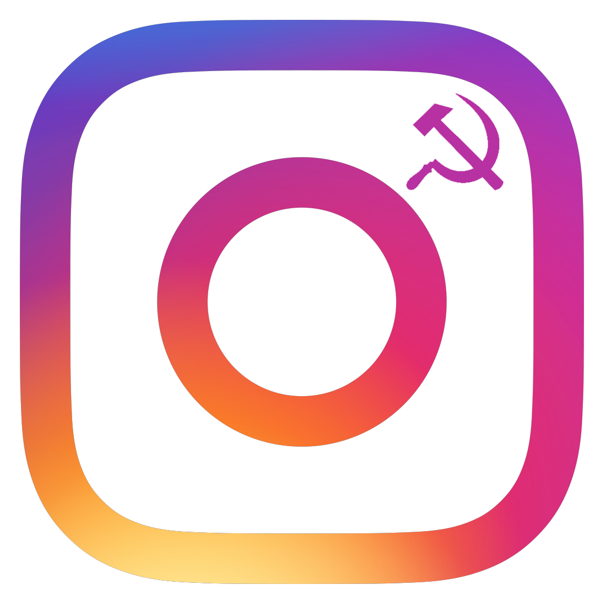
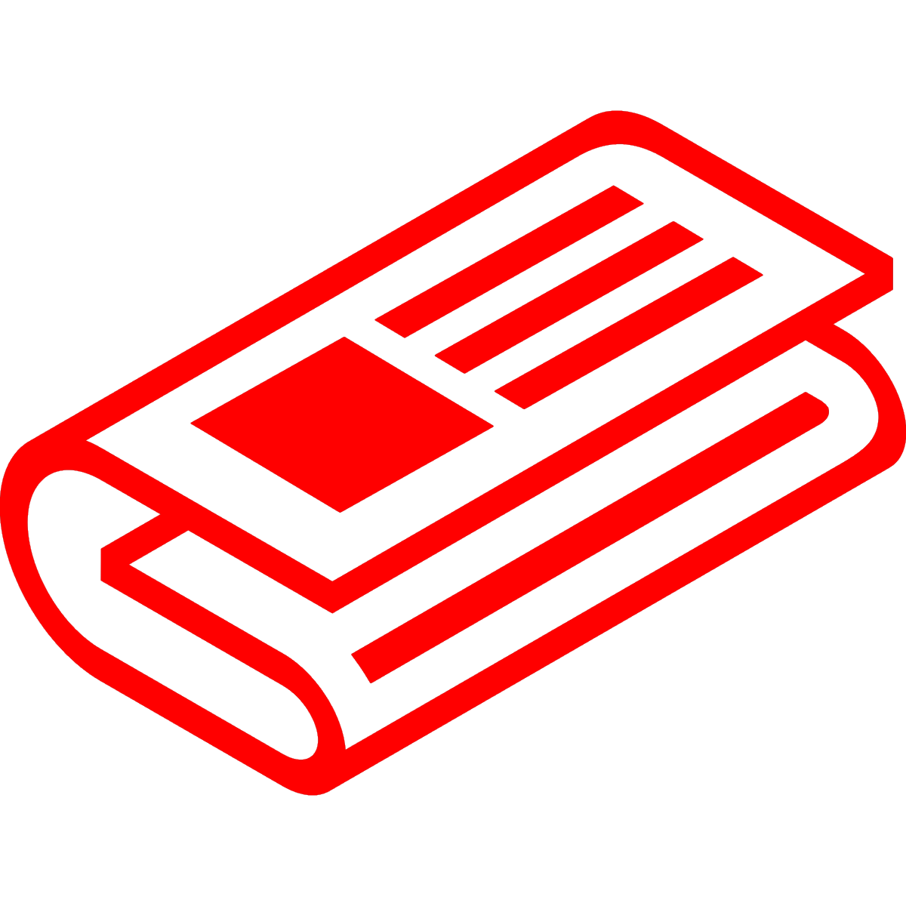

Giornale originariamente nato nel Marzo del 2022, poi riavviato nel Novembre dello stesso anno e nuovamente rinnovato nel Febbraio del 2023. Nel Luglio del 2024 abbandona il nome di "Indipendente Trockista" in favore di "Il Quarto Stato".
Link al profilo Instagram per ricevere gli aggiornamenti ed annunci di nuovi articoli.

137

17